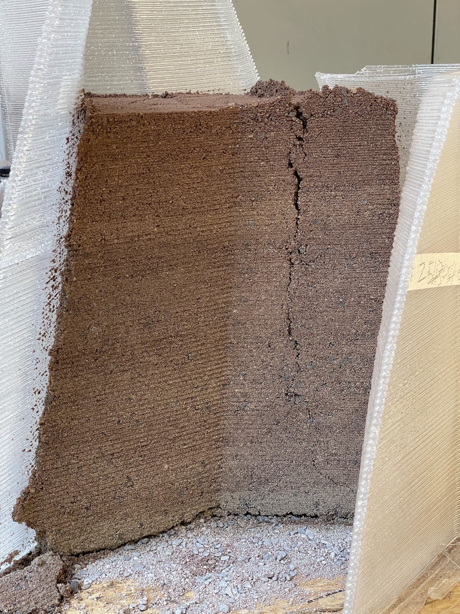
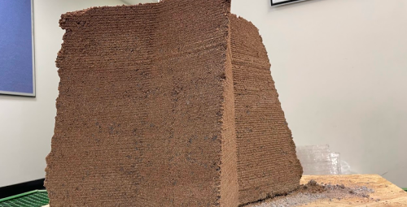
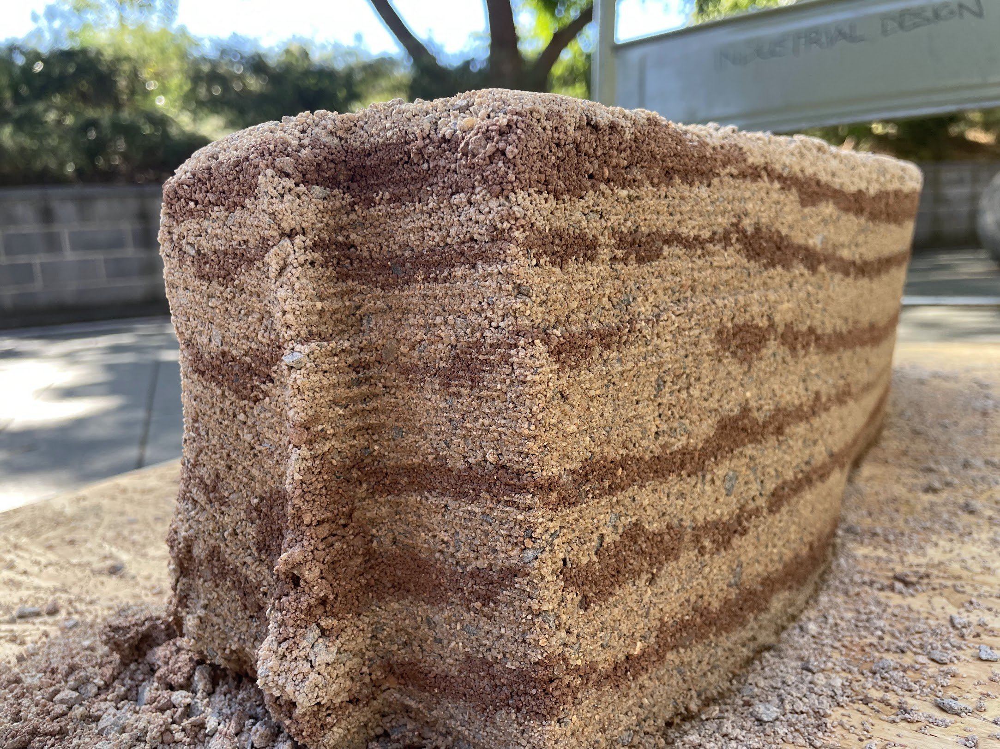
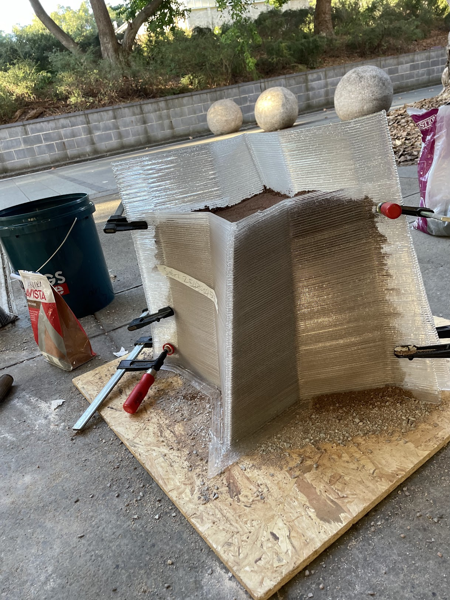

Exploring sustainable fabrication through robotic 3D printing and rammed earth construction.
This project investigates the integration of robotic fabrication and sustainable construction techniques by creating custom moulds for rammed earth structures using a KUKA KR70 robotic arm and Massive Dimension extruder. Recycled PETG was employed for 3D printing moulds, demonstrating the potential for advanced manufacturing methods to enhance eco-friendly building processes.
The rammed earth mixture was specifically formulated and tested, including sand, filtered topsoil, and small gravel aggregates. The result highlights the possibilities of precision digital fabrication combined with traditional, environmentally responsible building materials.
Moulds were digitally designed, parametrically optimised, and then 3D printed using a Massive Dimension extruder mounted on a KUKA KR70 robotic arm. The use of recycled PETG ensured a sustainable lifecycle approach. The rammed earth mixture was manually prepared and tested extensively to ensure structural integrity and sustainability.
Key challenges involved managing material consistency in recycled PETG printing and achieving the appropriate compaction and curing in rammed earth. Each iteration provided insights into improving the integration of digital fabrication and sustainable building materials.



The project successfully demonstrated the viability of using robotic fabrication for creating sustainable building components. The combination of recycled materials and locally sourced earth mixtures resulted in reduced environmental impact and provided valuable data for future developments in sustainable architecture.